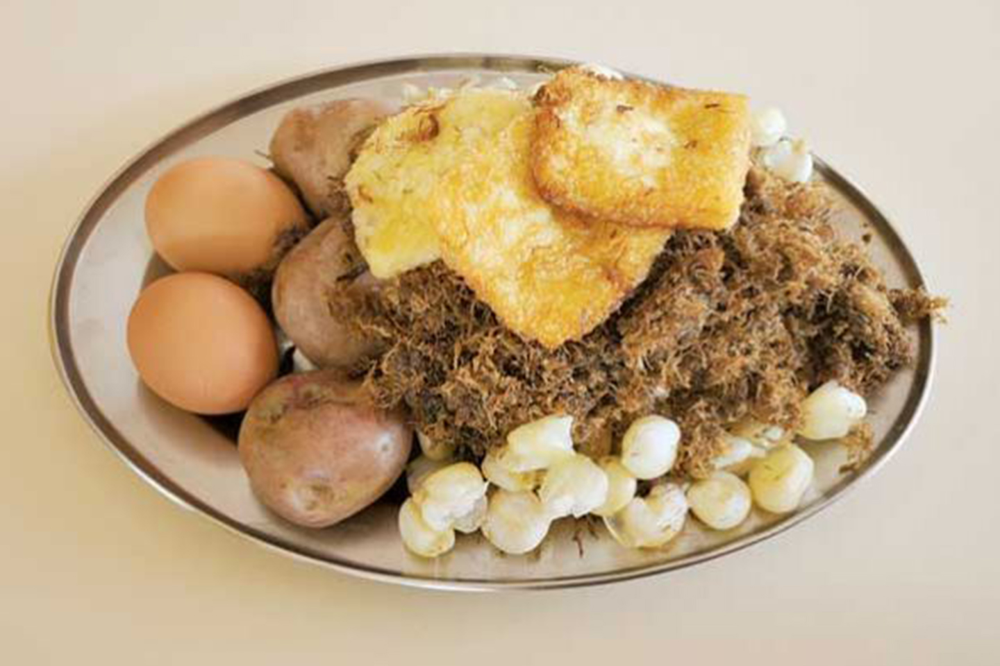

Otro de los platos típicos de Oruro que debes probar es el charquekan preparado a base de charque de llama o de res.
El charque o charqui es como se conoce en Sudamérica a la carne que se deshidrata al sol, para ser conservada por períodos prolongados.
Es un método prehispánico que comenzó con la carne de guanacos salvajes y que incorporó al ganado vacuno cuando llegó a América por los españoles.
Las recetas de sus ingredientes y preparado abundan en Bolivia, incluso con charque de res o de cordero. Sin embargo, hay poco escrito sobre su origen. Algunos autores afirman que nació en la comunidad de los Urus.
Este plato se popularizó en las minas orureñas. Los mineros, luego de su ardua jornada de trabajo, salían cansados de los socavones y lo primero que hacían era comer y la primera oferta que hallaban era charque de llama con mote.
A este plato se le incorporó la papa con cáscara (papahuayku) y el queso criollo, de esa zona.
Hasta que finalmente este plato se convirtió en el famoso charquekán que ahora lleva también huevo duro o pasado.
|  | Charquekan |